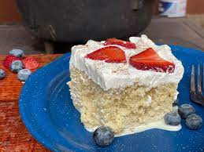

TresLeches

A delicous cake that is a mexican dessert
Description
The recipe follows something to the line of this, Tres leches literally means, “three milks” and Tres Leches Cake is an ultra light sponge cake soaked in a sweet milk mixture. It’s popular in Mexico and Latin America and throughout the United States as it’s often available at Mexican restaurants.
The cake is similar to an angel food cake. The whipped egg whites in the batter make it extra light and spongy. After baking the cake you poke holes in it with a fork and pour three types of milk over the top–evaporated milk, sweetened condensed milk, and whole milk–hence the name “tres leches”.
Ingredients
- 1 Cup all purpose flour
- 1 1/2 teaspoon baking powder
- 1/4 teaspoon salt
- 5 large egss, separated
- 1 cup granulated sugar, divided
- 1/3 cup whole milk
- 1 teaspoon vanilla extrract
Steps
- In a medium bowl combine flour, baking powder, and salt. Separate the eggs into two other mixing bowls.
- Add ¾ cup sugar to the bowl with the egg yolks and mix on high speed until yolks are pale yellow. Add ⅓ cup milk and vanilla and stir to combine. Pour the egg yolk mixture over the flour mixture and stir gently just until combined (don’t over-mix).
- Use electric beaters to beat the egg whites on high speed. As the begin to whip into stiff peaks, gradually mix in the remaining ¼ cup of sugar. Fold the stiffly beaten egg whites into the batter gently, scraping the bottom and sides of the bowl, until combined.
- Pour batter into pan and smooth it into an even layer. Bake for 25 to 35 minutes, or until a toothpick inserted in the center of the cake comes out clean. Remove from the oven and allow cake to cool completely.
- Combine the evaporated milk, sweetened condensed milk, and whole milk in a small bowl. Once the cake has cooled use a fork to poke holes all over the top of the cake.
- Slowly pour the milk mixture over the the top of the cake, making sure to pour near the edges and all around. Refrigerate the cake for at least 1 hour or overnight, to allow it to soak up the milk.
- In the meantime, whip the heavy cream, sugar and vanilla until stiff peaks. Smooth over the top of the cake.
- Serve with a sprinkle of cinnamon on top, and fresh sliced strawberries, if desired. Store Tres Leches Cake in the refrigerator, covered, for 3-5 days.